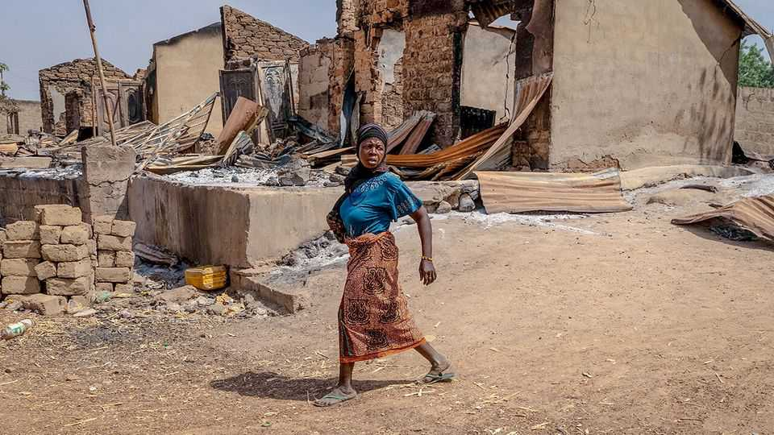

Middle East & Africa | Unwelcome guests
A deadly attack shows Nigeria’s security crisis is worsening
Jihadists and bandits are advancing on the country’s big cities
February 12th 2026

When residents of Kaiama region in Nigeria’s mid-western Kwara state followed the call to prayer on February 3rd, many never made it to the mosque. Armed men attacked two villages near the border with Benin, shooting people at close range, slitting their throats or burning them alive. The men killed around 170 people and destroyed the villages before they left. Bola Tinubu, Nigeria’s president, put the blame on “Boko Haram”, a moniker that used to refer to a specific jihadist outfit but has come to describe a myriad of armed groups wreaking havoc across the country.
Working out which group is really responsible for the massacre in Kaiama will take time. But Mr Tinubu’s initial reaction illustrates that jihadist groups have expanded far beyond the areas where they have traditionally been active. Nigeria has long faced several interlocking security crises, especially in the north. The attack in Kaiama is a reminder that the violence has spread alarmingly close to urban centres farther south.
One factor driving this grim trend is the evolution of jihadism. When the leader of Boko Haram died in 2021, the group split into two factions that now fight each other as well as other armed outfits. One of them, known as JAS, targets Muslims as well as Christians and is a plausible culprit for the Kaiama attack. It has been setting up cells in north-western Nigeria to raise money and gain influence beyond its north-eastern core. Conflicts with other bandits have forced it farther west.

Another possibility is Jama’a Nusrat ul-Islam wa al-Muslimin (JNIM), a group linked to al-Qaeda that has been active in the Sahel and across the border in Benin. It formally announced its presence in Nigeria in October with an attack in Kwara state. More recently, new militant groups have emerged in the forests along the Benin border (see map).
The biggest threat facing Nigerians in the north-west and increasingly in the central regions is still the hundreds of armed groups known as bandits. Motivated by money rather than ideology, they find willing recruits in the abjectly poor communities they terrorise and have little to fear from law enforcement in areas that are barely governed. Their business is evolving, too. Traditionally, they have focused their attentions on stealing cattle and crops. But many have become more directly involved in illegal gold mining, especially in Zamfara state, which has made them richer, better armed and more violent.
All this has also intensified traditional dynamics between bandits and jihadists. One way jihadists are able to gain influence is by offering protection to communities menaced by bandits. But where the grip of bandits proves too strong, civilians are less likely to be “protected” and more likely to end up in the crossfire.
There is a small chance that both types of groups run out of steam as they move ever farther south. Jihadist groups rely on ethnic and kinship networks to recruit their rank and file, which will be harder the farther they veer from traditional strongholds. Bandits, who thrive on weak governance, will struggle to deepen their influence in the more urban and better governed south. But that will not help anyone they are currently terrorising.
The government’s attempts to quell the violence have largely failed. Residents of Kaiama say they repeatedly pointed out the increasing threat from armed groups before the latest attack without receiving a response from the authorities. Following the assault, Mr Tinubu has dispatched troops to Kwara. But past experience illustrates the limits of military solutions. When the army last launched operations against several armed groups in the area in 2024 and 2025, the reprisal attacks were so brutal that it was forced to withdraw. Another jihadist group soon filled the void. America has dispatched a small team to Nigeria to help with counter-terrorism, but it is unclear what its precise role will be. In addition, the diffuse nature of the threat makes it hard to decide whom to target.
Ultimately, what would help is better governance. Mr Tinubu’s government is hiring more police and plans to allow states to run their own security so that they can address local threats directly. That is welcome. But the government has limited resources, and both bandits and jihadists have powerful regional supporters. Their grip will be hard to break. ■
Sign up to the Analysing Africa, a weekly newsletter that keeps you in the loop about the world’s youngest—and least understood—continent.